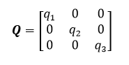
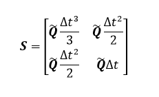
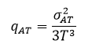

ProcessNoiseModel — Used to specify process noise for estimation when using the ExtendedKalmanFilter estimator.
A ProcessNoiseModel is assigned on the ProcessNoiseModel field of an instance of Spacecraft to allow an ExtendedKalmanFilter to account for general errors in force modeling.
ProcessNoiseModel is an alpha-level resource
and should not be used for operational support. Access to this resource
is disabled by default. To enable access to the ProcessNoiseModel
resource, comment-in the libEKF plug-in in the GMAT
gmat_startup_file.txt file.
See also ExtendedKalmanFilter, Spacecraft Navigation
| Field | Description | ||||||||||||
|---|---|---|---|---|---|---|---|---|---|---|---|---|---|
| AccelNoiseSigma | Three-axis process noise sigma. The root variance along each axis of an assumed Gaussian white noise process.
| ||||||||||||
| CoordinateSystem | Reference coordinate system for the process noise acceleration sigma vector.
| ||||||||||||
| Type | Process noise modeling type. See remarks below for additional details.
|
The StateNoiseCompensation process noise type implements the process noise algorithm described in Tapley, Schutz, and Born, Statistical Orbit Determination, Section 4.9 and Appendix F. The process noise is assumed to be an additive Gaussian white noise process applied to the total deterministic acceleration. For this scheme, the user provides the diagonal elements of the following matrix in a chosen reference frame.
|  |
where q1, q2, and q3 are the squares of the elements of the specified AccelNoiseSigma in the selected CoordinateSystem. The process noise S is then given by the matrix
|  |
Where
Determination of appropriate values of q1, q2, and q3 often involves experimentation via trial and error or a parametric analysis. References 1 and 2 indicate that an appropriate starting point for such tuning, in the case of near-circular orbits dominated by along-track error, can be derived from the following equation
|  |
Where
This example shows how to create and assign a ProcessNoiseModel.
% Create a ProcessNoiseModel Create ProcessNoiseModel SNC; SNC.Type = StateNoiseCompensation; SNC.CoordinateSystem = EarthMJ2000Eq; SNC.AccelNoiseSigma = [1e-8 1e-8 1e-8]; % Assign it to a Spacecraft Create Spacecraft EstSat; EstSat.ProcessNoiseModel = SNC; % Specify a process noise time step Create ExtendedKalmanFilter EKF EKF.ProcessNoiseTimeStep = 240.;